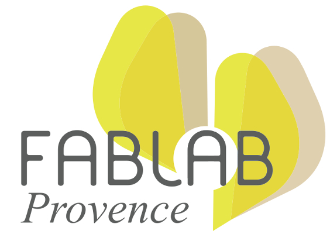

La révolution des makers

Sébastien NEDJAR
Cette présentation se veut non sérieuse et pourra donc contenir du second degré et de l’humour de qualité discutable. Veuillez ne pas jeter des tomates (ou tout autre objet) sur l’orateur s’il heurte par moment votre sensibilité.


“Les bons artistes copient, les grands artistes volent” Picasso
“Nous n’avons jamais eu honte de voler les excellentes idées” Steve Jobs
L’humanité a toujours innové en commençant par copier. Exemples :
- Le feu
- La pierre taillée
- La roue

Avec Internet et les outils numériques la connaissance est accessible à tous.
Et qu’y a t-il de mieux pour apprendre que de faire par soi même ?


Comme tout mouvement voulant apporter du changement, les makers se sont dotés un manifeste. Pour ce manifeste, comme pour tous les outils des makers, il est fortement recommandé de le modifier et de l’adapter librement pour se l’approprier.


Pour en savoir plus :
- Site Web : http://www.labaixbidouille.com/
- Twitter : @LabAixBidouille
- Github : https://github.com/LabAixBidouille
- Google groups : lab-aix@googlegroups.com
Vous allez avoir 6 questions de très haut niveau pour évaluer si vous avez bien écouté cette conférence.
Question 1 : Quel est la couleur du cheval blanc d’Henri IV ?
Question 2 : Quel est la réponse à la grande question sur la vie, l’univers et le reste ?
Question 3 : Que veulent dire les initiales L.A.B ?
Question 4 : Quand aura lieu la prochaine soirée #geekbidouille du L.A.B
Question 5 : quelle est la distance parcourue par la lumière dans le vide en 1/299 792 458 seconde?
Question 6 : quelle est la définition de TARDIS pour le Dr Who ?
{kind=link}